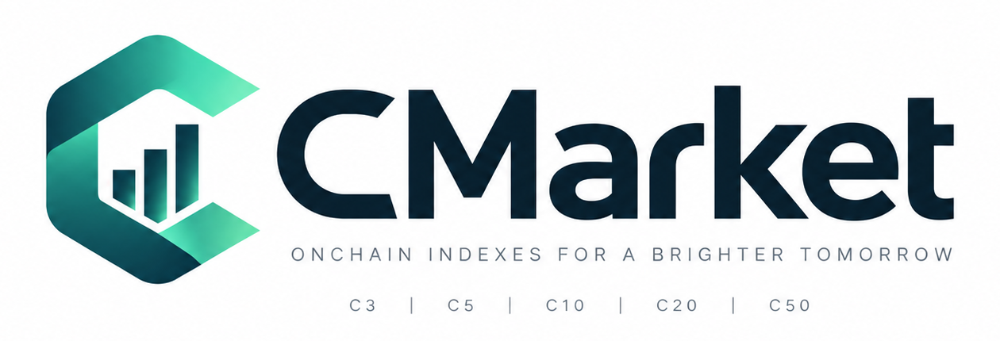

Solana Devnet prototype
Mobile USDC payments for the Seeker demo.
C Market is a mobile prototype that connects to a compatible Solana wallet, reads a Devnet USDC balance, and records a user-approved USDC payment on Solana Devnet.
C3 basket settlement is not enabled. The current prototype records only the Devnet USDC payment to the configured treasury.
View source on GitHub